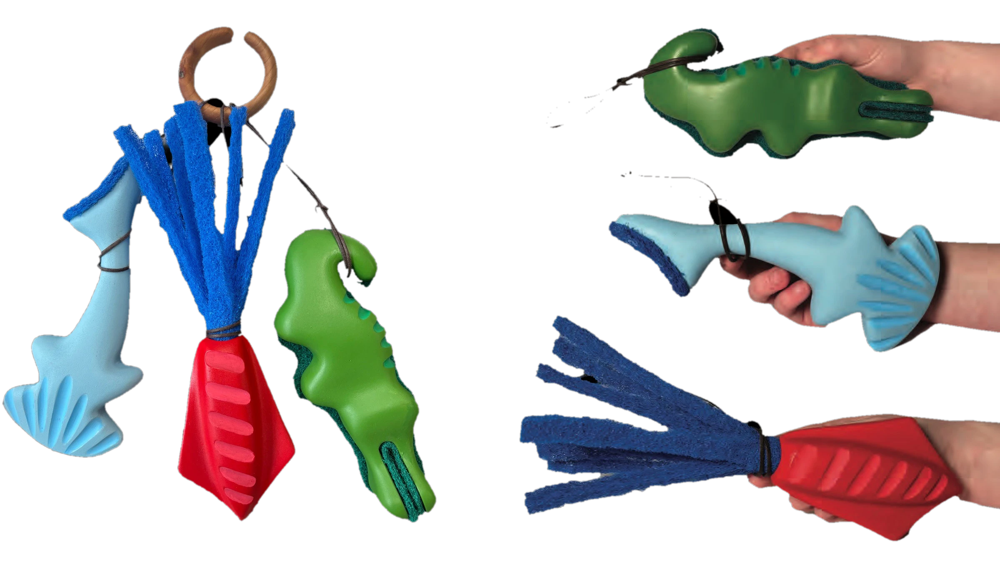
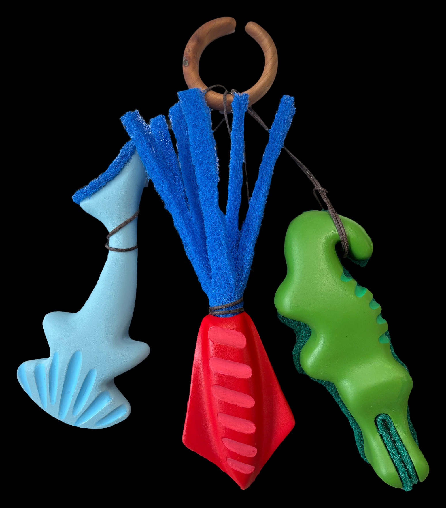
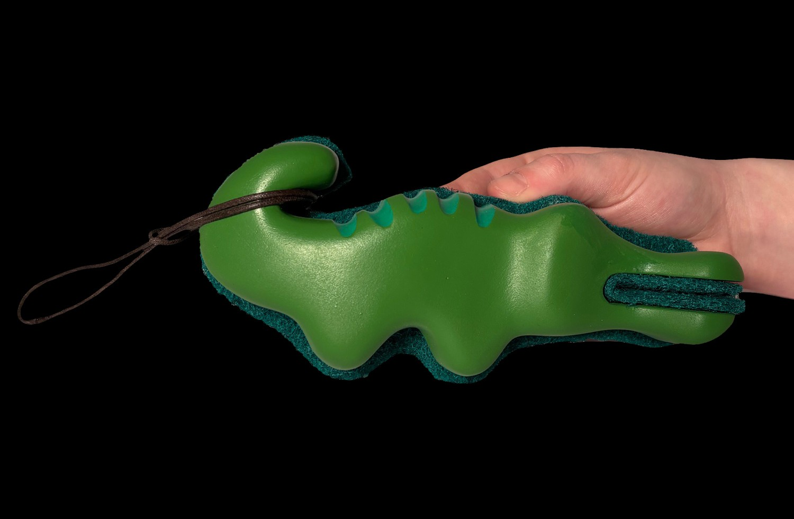
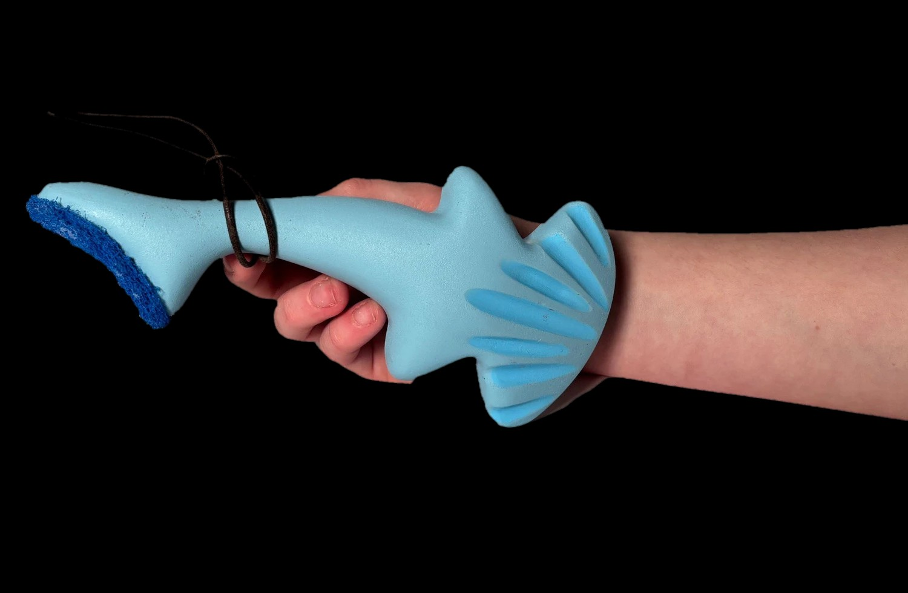
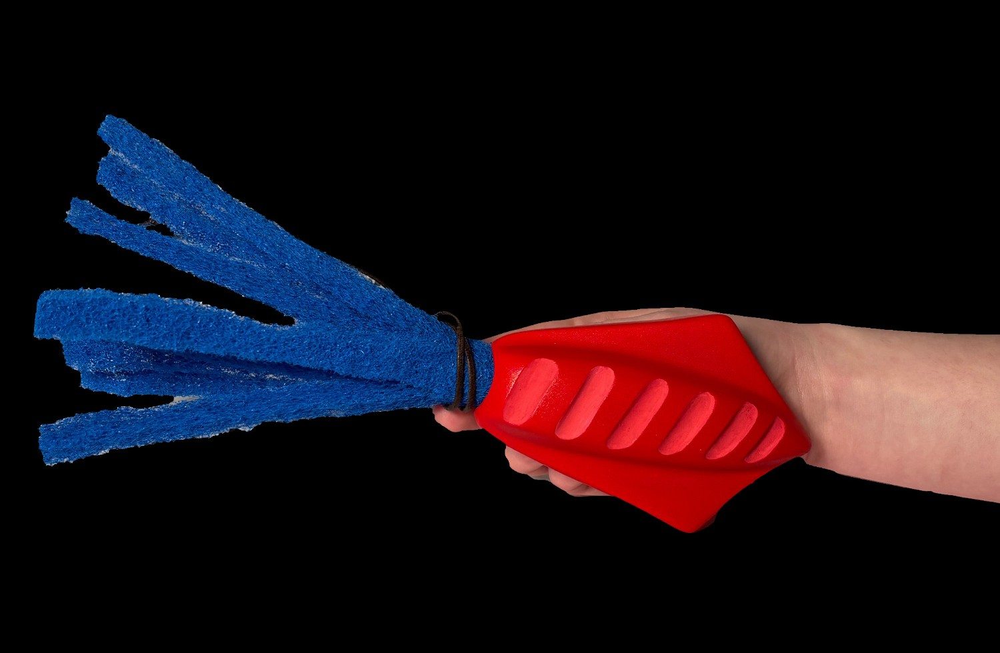

Sudsy Scrubbers

A pack of three hand-held dish scrubbers, a hammerhead shark, a squid and a gator, designed to help visually impaired kids aged 12–18 wash the dishes. Each one has its own job, and together they make the dishes fun while working as real dish scrapers.
Process
Task analysis
16 steps and four opportunity areas.
Concepts
Around 200 ideas narrowed to 5 directions.
Exploration
Ortho sketches and foam iterations.
OBO 300
Paint, sponges and a hanging display.
Final
Shark, squid and gator on a wooden ring.
Task Analysis
To find possible design paths, I tried doing the dishes with a pair of very high-prescription glasses, simulating someone who is visually impaired. I broke the task into 16 steps: roll up your sleeves, take off jewelry, grab the soap, open the soap, turn on the sink, pick up a dish, apply soap, put down the soap, pick up the sponge, wet the sponge, spread soap on the dish, scrub thoroughly, rinse all the soap off and place it in the rack.
That surfaced four opportunities: scrubbing and debris, knives and sharp objects, storage and drying racks, and vision and lighting.
Concepts & Sketching
During this part of the process I created around 200 concept ideas to get down to around 5 directions. I also used it to find 3 general paths I wanted to go down before doing more ideation.
Exploration & Iteration
After choosing a direction, I started work on ortho sketches and foam modeling to get my ideas out and iterate on previous ones.
OBO 300 Modeling
Working from my last foam models, I shifted to OBO and started on my final design, making choices about how it would be painted, assembled and displayed.
Paint: light blue for the shark, a mid-tone green for the gator and a medium red for the squid.
Sponges: I tested the sponges I planned to use for the mouth and side of the gator, the tentacles of the squid and the tail of the shark.
Display: the scrubbers hang on a small wooden hook next to the sink, connected with paracord.
Final Models
The finished set: a light blue hammerhead shark, a red squid with blue sponge tentacles and a green gator, hanging together on a wooden ring.



